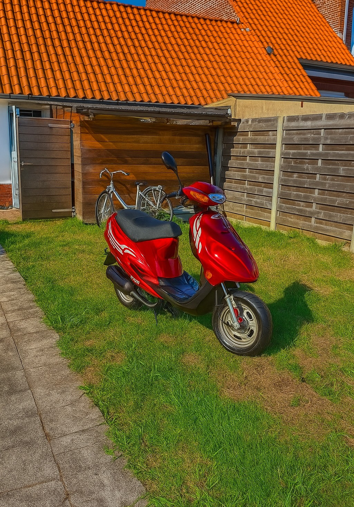

<!DOCTYPE html>
<html lang="nl">
<head>
<meta charset="UTF-8">
<meta name="viewport" content="width=device-width, initial-scale=1.0">
<title>GPT Performance - Scooter Onderhoud & Opvoeren</title>
<style>

</head>


<body>

<header>
    <h1>GPT Performance</h1>


</header>


<section class="hero" id="home">
    <h2>Optimaliseer je scooter, beleef de snelheid!</h2>
    <button>Maak een afspraak</button>
</section>

<section id="services">
    <h2 style="text-align:center;">Onze Diensten</h2>
    <div class="services">
        <div class="service">
            <h3>Scooter Onderhoud</h3>
            <p>Periodiek onderhoud, remmen, banden, olie verversen en motorcheck.</p>
        </div>
        <div class="service">
            <h3>Scooter Opvoeren</h3>
            <p>2- en 4-takt tuning, uitlaten, variatoren en carburateurs. Performance upgrades op maat.</p>
        </div>
        <div class="service">
            <h3>Pakketten & Offertes</h3>
            <p>Kies een onderhouds- of tuningpakket dat bij jou past. Vraag direct een offerte aan!</p>
        </div>
    </div>
</section>

<section id="about">
    <h2 style="text-align:center;">Over GPT Performance</h2>
    <p style="max-width:800px;margin:0 auto;text-align:center;">
        GPT Performance is jouw specialist in scooter onderhoud en opvoeren. Wij hebben ervaring met 2- en 4-takt scooters en zorgen dat jouw voertuig altijd top presteert. we zijn juist begonnen bedrijf we doen scooter onderhoud bij de klant binninkort hebben we locatie
    </p>
    <div class="team">
        <div class="member">
            <h3>gijs huijer</h3>
            <p>Hoofdmonteur, expert 2-takt scooters</p>
        </div>
        <div class="member">
            <h3></h3>
            <p>tuning</p>
        </div>
    </div>
</section>

<section id="gallery">
    <h2 style="text-align:center;">Galerij</h2>
    <div class="gallery">
        <div class="photo"></div>
        <div class="photo"></div>
        <div class="photo"></div>
    </div>
</section>

<section id="contact">
    <h2 style="text-align:center;">Contact</h2>
    <p style="text-align:center;">Adres: Jouw Straat 123, 1234 AB Stad | Telefoon: +3247064664 | Email:gptperformance7@gmail.com</p>
    <form style="max-width:600px;margin:20px auto;">
        <input type="text" placeholder="Naam" required>
        <input type="email" placeholder="Email" required>
        <textarea placeholder="Bericht" rows="5" required></textarea>
        <button type="submit">Verstuur</button>
    </form>
</section>

<footer>
    <p>&copy; 2025 GPT Performance. Alle rechten voorbehouden.</p>
    <p>Volg ons op: <a href="#" style="color:#ff6600;">Facebook</a> | <a href="#" style="color:#ff6600;">Instagram</a></p>
</footer>

</body>
</html>href="scooter-problemen.html">Ga naar scooterproblemen →</a></p>


